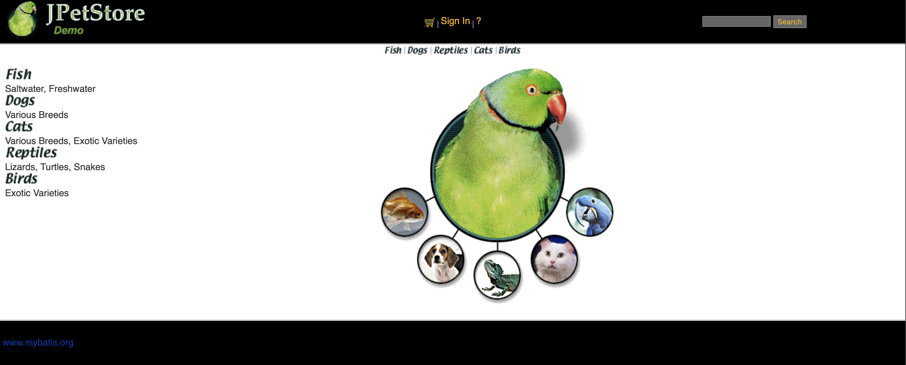

JPetStore
Resources
| GitHub Repository | https://github.com/SarahBornais/jpetstore-6 |
| Pre-Built Files | jpetstore.war |
| Output File | jpetstore.json |
Requirements
Java version must be one of: 11, 17, 19, 20, 21
Introduction
The JPetStore application allows users to view and order various types of pets, including cats, dogs, fish, reptiles, and birds. It features a simple web-based interface, pictured below. The src/main/webapp/help.html page in the GitHub repository provides a good introduction to how the application UI works.

Directory Structure
├── .mvn : necessary maven wrapper files
└── src : has the application's source code and all test code
├── main
│ ├── java.org.mybatis.jpetstore : source code for the application
│ │ ├── domain : business domain objects
│ │ ├── mapper : mapper interfaces
│ │ ├── service : application logic
│ │ └── web.actions : presentation logic (actions)
│ ├── resources : non-java files
│ │ ├── database : sql scripts to construct and populate database
│ │ └── org.mybatis.jpetstore.mapper : mapper xml files
│ └── webapp : frontend html files
├── site : xml files describing the site directory in multiple languages
└── test : JUnit tests for each of the Java application components
└── java.org.mybatis.jpetstore
├── domain : tests for business domain objects
├── mapper : tests for mapper interfaces
├── service : tests for application logic
└── web.actions : tests for presentation logic (actions)
Instructions
First, clone the forked repository:
git clone https://github.com/SarahBornais/jpetstore-6
cd jpetstore-6
Building
Run ./mvnw clean package
The WAR file will be created at target/jpetstore.war
Running
Run ./mvnw cargo:run -P tomcat90
Testing
Run ./mvnw clean verify -P tomcat90